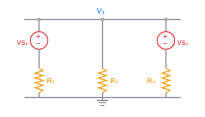
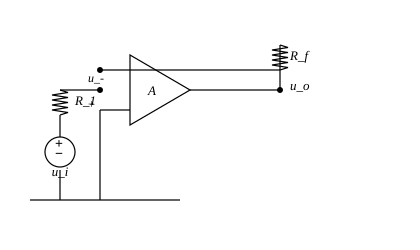
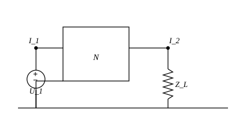

⚡ 电路原理 · 达标训练10题
孙正田 · 海南大学 · 覆盖期末全部考点 · 附答案详解
① 节点电压法 中等

第一步：选定参考节点（地），列节点1的KCL方程
以底边为参考节点(0V)，设节点①为 $V_1$。
节点①流出电流之和为零：
$$\frac{V_1 - V_{S1}}{R_1} + \frac{V_1}{R_2} + \frac{V_1 - V_{S2}}{R_3} = 0$$
第二步：代入数值
$$\frac{V_1 - 12}{2} + \frac{V_1}{4} + \frac{V_1 - 6}{2} = 0$$
两边乘以4：
$$2(V_1 - 12) + V_1 + 2(V_1 - 6) = 0$$
$$2V_1 - 24 + V_1 + 2V_1 - 12 = 0$$
$$5V_1 = 36 \quad\Rightarrow\quad \boxed{V_1 = 7.2V}$$
第三步：求各支路电流
$I_1 = \displaystyle\frac{V_1 - V_{S1}}{R_1} = \frac{7.2 - 12}{2} = -2.4A$（负号表示实际方向与假设方向相反）
$I_2 = \displaystyle\frac{V_1}{R_2} = \frac{7.2}{4} = 1.8A$
$I_3 = \displaystyle\frac{V_1 - V_{S2}}{R_3} = \frac{7.2 - 6}{2} = 0.6A$
第四步：验证KCL
$I_1 + I_2 + I_3 = -2.4 + 1.8 + 0.6 = 0$ ✓
② 网孔电流法 中等
第一步：设定网孔电流
设左网孔电流 $i_1$（顺时针），右网孔电流 $i_2$（顺时针）。
第二步：列KVL方程
左网孔：
$$(R_1 + R_2)i_1 - R_2 i_2 = V_{S1}$$
$$(4 + 2)i_1 - 2i_2 = 10$$
$$6i_1 - 2i_2 = 10 \quad\cdots\text{(1)}$$
右网孔：
$$-R_2 i_1 + (R_2 + R_3)i_2 = -V_{S2}$$
$$-2i_1 + (2 + 6)i_2 = -8$$
$$-2i_1 + 8i_2 = -8 \quad\cdots\text{(2)}$$
第三步：联立求解
由(1)：$i_1 = \displaystyle\frac{10 + 2i_2}{6}$
代入(2)：
$$-2 \cdot \frac{10 + 2i_2}{6} + 8i_2 = -8$$
$$-\frac{10 + 2i_2}{3} + 8i_2 = -8$$
$$-10 - 2i_2 + 24i_2 = -24$$
$$22i_2 = -14$$
$$\boxed{i_2 = -0.636A}$$
代入(1)：$6i_1 - 2(-0.636) = 10$
$6i_1 = 10 - 1.272 = 8.728$
$$\boxed{i_1 = 1.455A}$$
第四步：求各支路电流
$I_{R1} = i_1 = 1.455A$（向下）
$I_{R2} = i_1 - i_2 = 1.455 - (-0.636) = 2.091A$（从右到左）
$I_{R3} = -i_2 = 0.636A$（向下）
③ 叠加定理 较难
核心思想：独立源单独作用，电压源短路、电流源开路。
Step 1：仅电压源作用（电流源开路）
$I_S$ 开路，电路变为电压源 $V_S=10V$ 串联 $R_1+R_3$，$R_2$ 悬空。
$V_x' = V_S \cdot \displaystyle\frac{R_3}{R_1+R_3} = 10 \cdot \frac{4}{2+4} = 10 \cdot \frac{4}{6} = 6.67V$
Step 2：仅电流源作用（电压源短路）
$V_S$ 短路，$R_1//R_2$ 后与 $R_3$ 并联分流：
$R_{12} = R_1 \parallel R_2 = 1\Omega$
$V_x'' = I_S \cdot (R_{12} \parallel R_3) = 3 \cdot \frac{1 \times 4}{1+4} = 3 \cdot 0.8 = 2.4V$
（注意电流方向与 $V_x$ 参考方向一致）
Step 3：叠加
$$V_x = V_x' + V_x'' = 6.67 + 2.4 = \boxed{9.07V}$$
④ 戴维南定理 中等
第一步：求开路电压 $V_{oc}$
断开 $R_L$，a-b端开路，$R_1$ 与 $R_2$ 串联分压：
$$V_{oc} = V_S \cdot \frac{R_2}{R_1+R_2} = 12 \cdot \frac{6}{4+6} = 12 \cdot 0.6 = \boxed{7.2V}$$
第二步：求等效电阻 $R_{eq}$
电压源短路，从a-b端看进去：$R_1 \parallel R_2$
$$R_{eq} = R_1 \parallel R_2 = \frac{4 \times 6}{4+6} = \frac{24}{10} = \boxed{2.4\Omega}$$
第三步：戴维南等效电路
一个 $V_{oc}=7.2V$ 的电压源与 $R_{eq}=2.4\Omega$ 串联。
第四步：接上 $R_L$ 求 $I_L$ 和 $V_L$
$$I_L = \frac{V_{oc}}{R_{eq}+R_L} = \frac{7.2}{2.4+5} = \frac{7.2}{7.4} = \boxed{0.973A}$$
$$V_L = I_L \cdot R_L = 0.973 \times 5 = \boxed{4.865V}$$
⑤ 一阶动态电路（RC + RL）较难
第一步：时间常数 $\tau$
$$\tau = RC = 2000 \times 10 \times 10^{-6} = 0.02s = \boxed{20ms}$$
第二步：$V_C(t)$ 表达式
RC充电公式：$V_C(t) = V_S(1 - e^{-t/\tau})$
$$\boxed{V_C(t) = 12(1 - e^{-t/0.02}) = 12(1 - e^{-50t})\,V}$$
第三步：$I_C(t)$ 表达式
$I_C(t) = C \cdot \displaystyle\frac{dV_C}{dt} = C \cdot \frac{V_S}{\tau}e^{-t/\tau} = \frac{V_S}{R}e^{-t/\tau}$
$$\boxed{I_C(t) = \frac{12}{2000}e^{-50t} = 6e^{-50t}\,mA}$$
第四步：$t=5ms$ 时的 $V_C$
$t/\tau = 0.005/0.02 = 0.25$
$$V_C(5ms) = 12(1 - e^{-0.25}) = 12(1 - 0.7788) = 12 \times 0.2212 = \boxed{2.65V}$$
第一步：时间常数 $\tau$
$$\tau = \frac{L}{R} = \frac{0.5}{100} = 0.005s = \boxed{5ms}$$
第二步：$I_L(t)$ 表达式
RL充电公式：$I_L(t) = \displaystyle\frac{V_S}{R}(1 - e^{-t/\tau})$
$$\boxed{I_L(t) = \frac{6}{100}(1 - e^{-200t}) = 0.06(1 - e^{-200t})\,A}$$
第三步：$V_L(t)$ 表达式
$V_L(t) = L \cdot \displaystyle\frac{dI_L}{dt} = L \cdot \frac{V_S}{L}e^{-t/\tau} = V_S e^{-t/\tau}$
$$\boxed{V_L(t) = 6e^{-200t}\,V}$$
第四步：$t=3ms$ 时的 $I_L$
$t/\tau = 0.003/0.005 = 0.6$
$$I_L(3ms) = 0.06(1 - e^{-0.6}) = 0.06(1 - 0.5488) = 0.06 \times 0.4512 = \boxed{27.1mA}$$
⑥ 正弦稳态分析 较难
第一步：总阻抗
$$\dot{Z} = R + jX_L - jX_C = 5 + j3 - j4 = 5 - j1\,\Omega$$
$$\dot{Z} = \sqrt{5^2 + (-1)^2} \angle \arctan(-1/5) = \boxed{5.099\angle -11.31^\circ\, \Omega}$$
第二步：电流相量
相量法：$v_s(t) = 10\sin(1000t) \Rightarrow \dot{V}_S = 10\angle 0^\circ V$
$$\dot{I} = \frac{\dot{V}_S}{\dot{Z}} = \frac{10\angle 0^\circ}{5.099\angle -11.31^\circ} = \boxed{1.961\angle 11.31^\circ\, A}$$
时域形式：$i(t) = 1.961\sin(1000t + 11.31^\circ)\,A$
第三步：各元件电压
$$\dot{V}_R = \dot{I} \cdot R = 1.961\angle 11.31^\circ \times 5 = 9.805\angle 11.31^\circ\,V$$
$$\dot{V}_L = \dot{I} \cdot jX_L = 1.961\angle 11.31^\circ \times 3\angle 90^\circ = 5.883\angle 101.31^\circ\,V$$
$$\dot{V}_C = \dot{I} \cdot (-jX_C) = 1.961\angle 11.31^\circ \times 4\angle -90^\circ = 7.844\angle -78.69^\circ\,V$$
验证KVL： $\dot{V}_R + \dot{V}_L + \dot{V}_C \approx 10\angle 0^\circ = \dot{V}_S$ ✓
⑦ 功率计算 中等

第一步：计算各元件阻抗
$X_L = \omega L = 314 \times 0.3 = 94.2\Omega$
$X_C = \displaystyle\frac{1}{\omega C} = \frac{1}{314 \times 50 \times 10^{-6}} = 63.7\Omega$
第二步：总阻抗（有效值形式）
$$Z = \sqrt{R^2 + (X_L - X_C)^2} = \sqrt{40^2 + (94.2 - 63.7)^2} = \sqrt{1600 + 930.25} = \sqrt{2530.25} = \boxed{50.3\Omega}$$
阻抗角：$\varphi = \arctan\displaystyle\frac{X_L - X_C}{R} = \arctan\frac{30.5}{40} = \arctan 0.7625 = \boxed{37.3^\circ}$（感性）
第三步：电流有效值
电压有效值：$V = 220V$
$$I = \frac{V}{Z} = \frac{220}{50.3} = \boxed{4.37A}$$
第四步：功率计算
$$\cos\varphi = \frac{R}{Z} = \frac{40}{50.3} = 0.795$$
有功功率：$P = VI\cos\varphi = 220 \times 4.37 \times 0.795 = \boxed{764W}$
无功功率：$Q = VI\sin\varphi = 220 \times 4.37 \times \sin 37.3^\circ = 220 \times 4.37 \times 0.606 = \boxed{583Var}$
视在功率：$S = VI = 220 \times 4.37 = \boxed{961.4VA}$
功率因数：$\boxed{\lambda = \cos\varphi = 0.795}$（滞后）
验算：$S = \sqrt{P^2 + Q^2} = \sqrt{764^2 + 583^2} = \sqrt{925249} = 961.9 \approx S$ ✓
⑧ 三相电路 较难
第一步：线电压
Y形连接：$V_L = \sqrt{3} \cdot V_p$
$$V_L = \sqrt{3} \times 220 = \boxed{381V}$$
第二步：相电流（=线电流）
$$|Z| = \sqrt{30^2 + 40^2} = \sqrt{900 + 1600} = \sqrt{2500} = 50\Omega$$
$$\varphi = \arctan\frac{40}{30} = \arctan 1.333 = 53.13^\circ$$
$$I_p = \frac{V_p}{|Z|} = \frac{220}{50} = \boxed{4.4A}$$
第三步：三相总有功功率
方法一：$P_{total} = 3 \cdot V_p I_p \cos\varphi = 3 \times 220 \times 4.4 \times \cos 53.13^\circ$
$\cos 53.13^\circ = 0.6$
$$P_{total} = 3 \times 220 \times 4.4 \times 0.6 = \boxed{1742.4W}$$
方法二（验算）：$P_{total} = 3 I_p^2 R = 3 \times 4.4^2 \times 30 = 3 \times 19.36 \times 30 = 1742.4W$ ✓
三相无功功率：
$$Q_{total} = 3 V_p I_p \sin\varphi = 3 \times 220 \times 4.4 \times \sin 53.13^\circ$$
$\sin 53.13^\circ = 0.8$
$$Q_{total} = 3 \times 220 \times 4.4 \times 0.8 = \boxed{2323.2Var}$$
⑨ 运算放大器 中等

关键概念：理想运放的"虚短"和"虚断"
虚短：$v_+ = v_-$；虚断：$i_+ = i_- = 0$
第一步：反相端电压
同相端接地 $\Rightarrow v_+ = 0V$
由虚短：$v_- = v_+ = \boxed{0V}$（虚地）
第二步：求 $i_1$
$$i_1 = \frac{v_i - v_-}{R_1} = \frac{2 - 0}{10k} = 0.2mA$$
第三步：求 $v_o$
由虚断：$i_f = i_1 = 0.2mA$
$$v_o = v_- - i_f \cdot R_f = 0 - 0.2mA \times 100k\Omega = \boxed{-20V}$$
第四步：闭环增益
$$A_v = \frac{v_o}{v_i} = -\frac{R_f}{R_1} = -\frac{100k}{10k} = \boxed{-10}$$
⑩ 二端口网络 较难

第一步：写出二端口方程
$Z$参数定义：
$$\begin{cases} V_1 = Z_{11}I_1 + Z_{12}I_2 \\ V_2 = Z_{21}I_1 + Z_{22}I_2 \end{cases}$$
代入：
$$\begin{cases} V_1 = 4I_1 + 2I_2 \quad\cdots(1) \\ V_2 = 2I_1 + 6I_2 \quad\cdots(2) \end{cases}$$
第二步：加入端口条件
$V_1 = 10V$（电压源输入）
$V_2 = -I_2 \cdot R_L = -4I_2$（负载约束，注意参考方向）
第三步：联立求解
由(2)和负载约束：
$$2I_1 + 6I_2 = -4I_2 \Rightarrow 2I_1 + 10I_2 = 0 \Rightarrow I_1 = -5I_2$$
代入(1)：
$$10 = 4(-5I_2) + 2I_2 = -20I_2 + 2I_2 = -18I_2$$
$$\boxed{I_2 = -\frac{5}{9} = -0.556A}$$
$$I_1 = -5 \times (-0.556) = \boxed{2.78A}$$
第四步：求输出电压
$$V_2 = -I_2 \cdot R_L = -(-0.556) \times 4 = \boxed{2.22V}$$
或由(2)：$V_2 = 2 \times 2.78 + 6 \times (-0.556) = 5.56 - 3.336 = 2.224V$ ✓
- 节点电压法 & 网孔电流法：二选一即可，建议用节点法（手算更少出错）
- 戴维南定理：最常用技巧，求 $R_{eq}$ 时记得独立源置零
- 一阶动态电路：背熟三要素公式 $f(t) = f(\infty) + [f(0^+) - f(\infty)]e^{-t/\tau}$
- 正弦稳态：相量法是核心，阻抗三角形记牢
- 三相电路：记住Y-Δ转换关系 $V_L=\sqrt{3}V_p$, $I_L=I_p$（Y形）
- 运放：虚短虚断是灵魂，第一步永远先判断负反馈